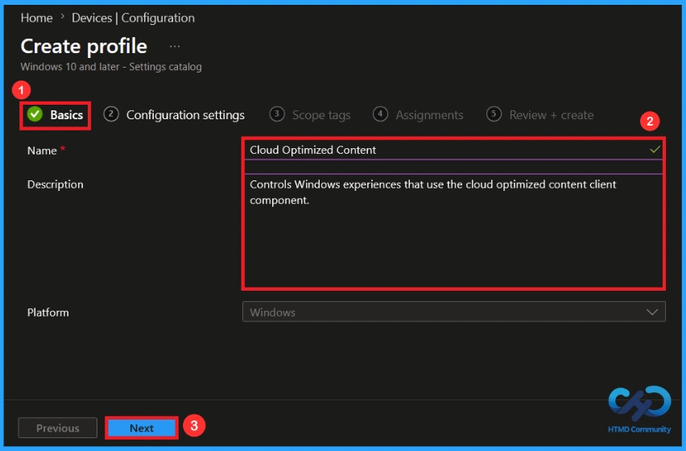
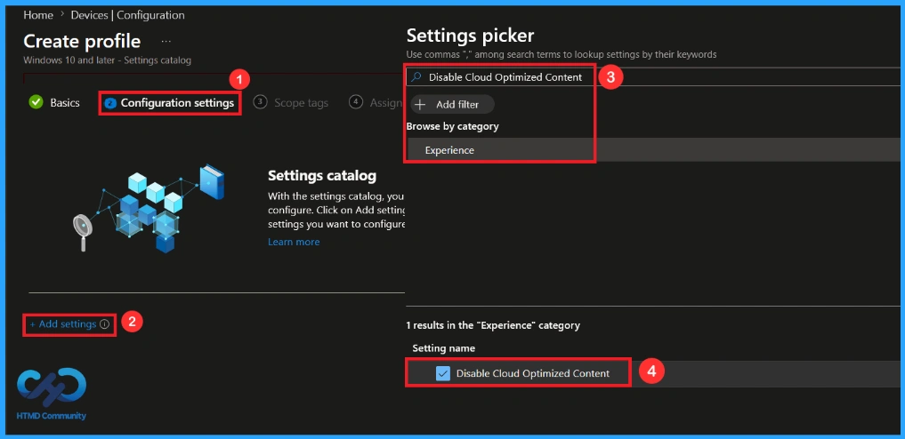
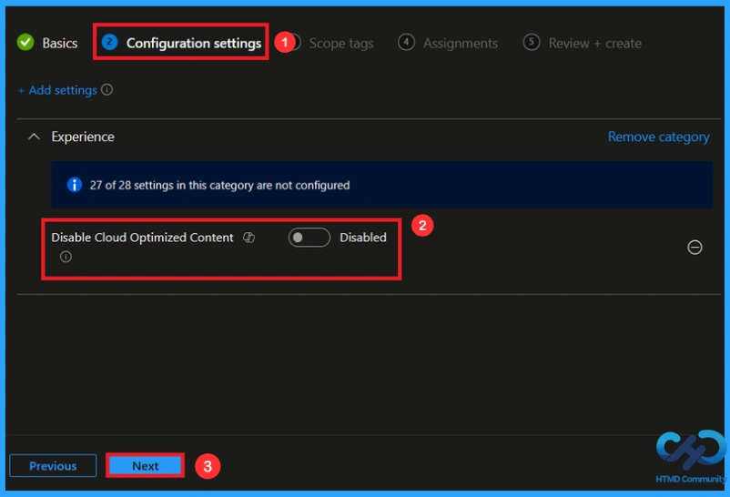
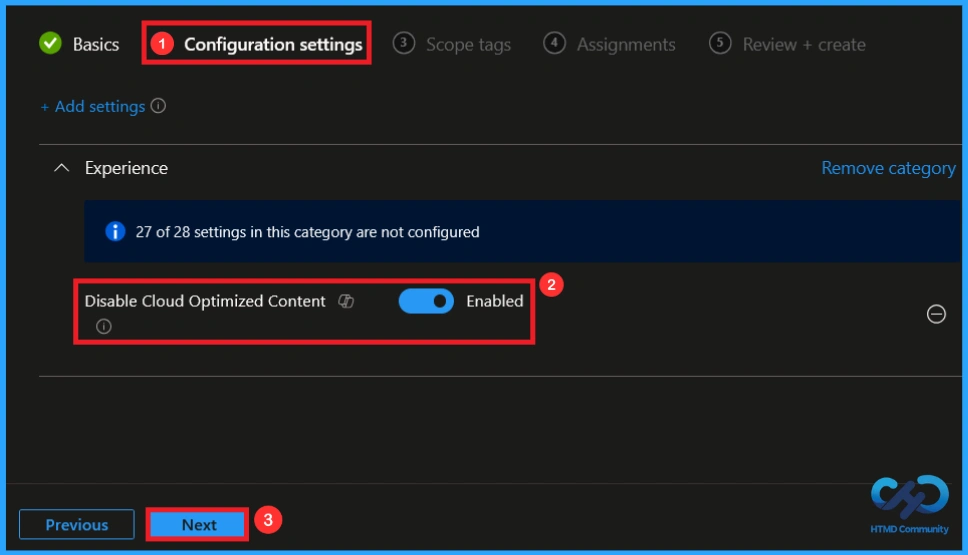
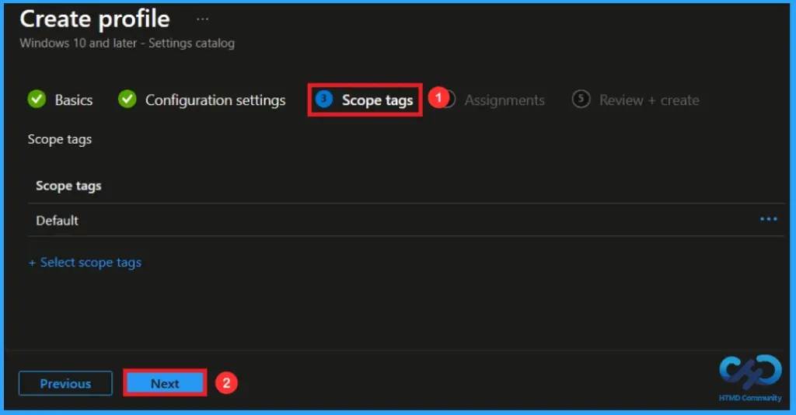
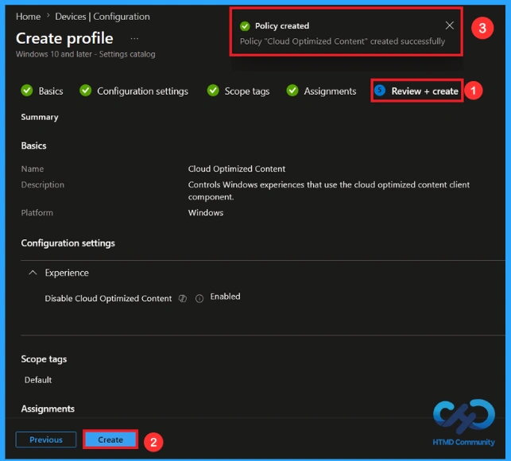
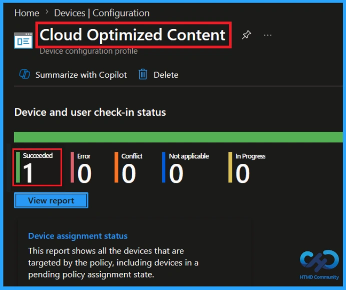
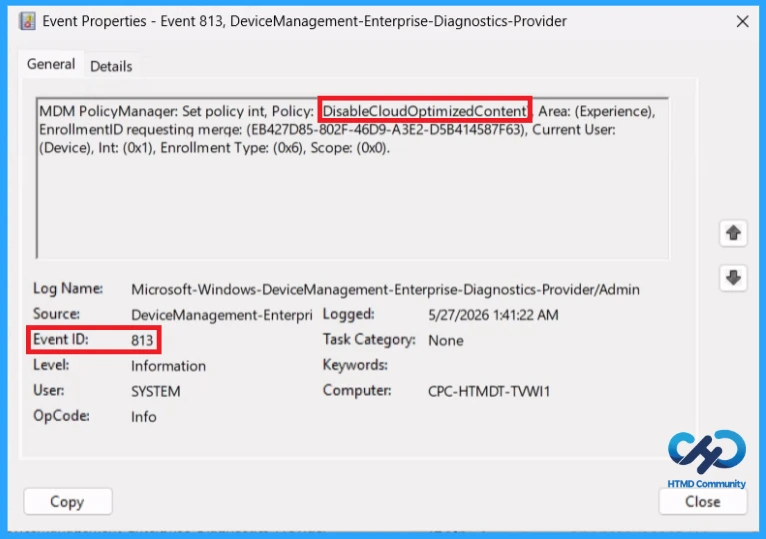
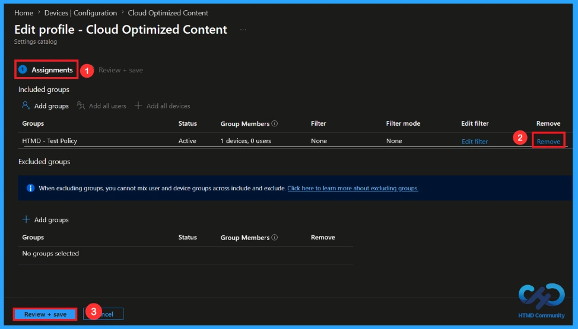
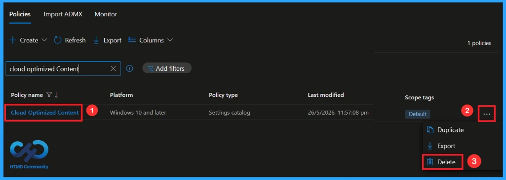

Key Takeaways
- This policy setting lets you turn off cloud optimized content in all Windows experiences.
- Windows experiences will be able to use cloud optimized content when disabled.
- This policy will be disabled by default.
- This policy applies only to the device scope, not the user scope.
- Supported on Windows 11 version 21H2 and later editions like Enterprise and Education.
Hey, let’s discuss about How to Manage Default and Cloud-Provided Windows Content with Intune. This policy setting lets you turn off cloud optimized content in all Windows experiences. If you enable this policy, Windows experiences that use the cloud optimized content client component will instead present the default fallback content. Windows experiences will be able to use cloud optimized content when it is disabled.
Table of Contents
What are the Advantages of this Policy?
This policy helps Windows experiences that use the cloud optimized content client component.
1. Improves privacy by blocking cloud-delivered content.
2. Ensures a consistent experience across devices.
3. Reduces dependence on internet-based content services.
How to Manage Default and Cloud-Provided Windows Content with Intune
This policy disables cloud-optimized content and limits Windows experiences to default content only. It helps maintain a consistent and controlled user experience across devices.
How to Create a Policy
To create a policy, first you need to sign in to the Microsoft Intune Admin Center. There, click on Devices. On the devices, choose configuration under manage device category, then click on Create downarrow and select New policy.

Profile Creation in a Policy
The next step in creating the policy is to create the profile. When creating a profile, you must select the Platform and Profile type. Then click on the Create button. From this window, you can select:
| Platform | Profile Type |
|---|---|
| Windows 10 and later | Settings catalog |

Basics Tab for Name and Description
Giving the policy an appropriate Name helps you to understand it whenever needed. In this step, giving the policy a name is mandotary you can’t skip it, but giving a Description is optional. Here, I gave the policy name as cloud optimized content. After adding this, click on the Next button.

How to Configure this Policy
On this configuration tab, click on add settings to open the settings picker. In the settings picker, you can see numerous policy settings Here, I selected the policy by browsing the policy name then you can see its category as , select the category and enable the policy setting.

Default settings in this Policy
The policy will be disabled by default. If you disable or do not configure this policy, they will be able to use cloud provided content. If you like to continue like this click on Next.

Enabling this Policy
Since this policy controls Windows experiences that use the cloud optimized content client component. If you enable this policy, they will present only default content. Here I like to continue by enabling this policy. click on Next.

A scope tag in Intune is used to control which administrators can see and manage policies. Scope tags are not mandatory. You can add the scope tag using the select scope tags button. Click Next to continue.

Assignments Tab to Add Group
On the assignments tab, you can select which users or devices get this policy. Under Included Groups, click on Add Groups and select the group that you need to apply from the list of groups. Here, I choose HTMD – Test Policy. Then click the Next button to continue.

Finalising the Policy
At the Review + Create step, you can review each tab that you have selected before. This helps to avoid misconfiguration or policy failure. After reviewing you can make changes by clicking Previous option. At last click Create to finish, and a notification confirms that the cloud optimized content has been created successfully.

Monitoring the Status of the Policy
You can check the status of a policy in the Intune portal. Generally, it takes 8 hours for policies to be created. To avoid this delay you can use manual sync option using the company portal app on the device, then check the status again. Navigate to Devices > Configuration. Click on the specific policy to see its details.

Client-Side Verification
To confirm if a policy has been applied, use the Event Viewer on the client device. Go to Applications and Services Logs > Microsoft >Windows >Device Management > Enterprise Diagnostic Provider > Admin. From the list of policies, use the Filter Current Log option and search for Intune event ID 813.
MDM PolicyManager: Set policy int, Policy: (DisableCloudOptimizedContent), Area: (Experience),
EnrollmentID requesting merge: (EB427D85-802F-46D9-A3E2-D5B414587F63), Current User:
(Device), Int: (0x1), Enrollment Type: (0x6), Scope: (0x0).

How to Remove an Assigned Group from this Policy
If you need to remove a group from a policy assignment for any purpose. Open the policy from the configuration tab and click on the edit button. Then, click on the Remove button near the assigned group. Then, click Review + Save after making necessary changes.
For detailed information, you can refer to our previous post – Learn How to Delete or Remove App Assignment from Intune using by Step-by-Step Guide.

How to Delete this Policy from Intune Portal
It is very easy to remove a policy. For this first you need to search for the policy name in the configuration section. When you find the policy name, click the 3-dot menu next to it and click the Delete option. Finally, a notification confirms that your policy has been deleted successfully.
For more information, you can refer to our previous post – How to Delete Allow Clipboard History Policy in Intune Step by Step Guide.

Need Further Assistance or Have Technical Questions?
Join the LinkedIn Page and Telegram group to get the step-by-step guides and news updates. Join our Meetup Page to participate in User group meetings. Also, Join the WhatsApp Community and WhatsApp Channel to get the latest news on Microsoft Technologies. We are there on Reddit as well.
Author
Anoop C Nair has been Microsoft MVP for 10 consecutive years from 2015 onwards. He is a Workplace Solution Architect with more than 22+ years of experience in Workplace technologies. He is a Blogger, Speaker, and Local User Group Community leader. His primary focus is on Device Management technologies like SCCM and Intune. He writes about technologies like Intune, SCCM, Windows, Cloud PC, Windows, Entra, Microsoft Security, Career, etc.